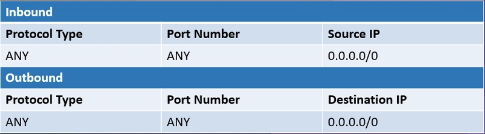
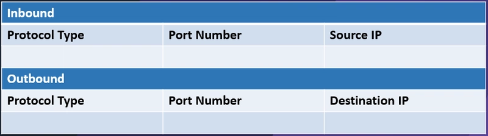

about
This page is about respond function in AWS
ec2 isolation
- [ ] 🔼 need to recheck this Users can use multiple approaches when isolating an EC2 instance. The approach used will depend on the level of isolation required.
The most common methods of isolation are:
- Security Groups
- NACLs
- Route Tables
- Internet Gateways
Containing an EC2 Using Security Groups
Security groups are often the most common approach when isolating an EC2 instance due to their ease of use and targeting isolation capabilities.
A security group's default "implicit deny" behaviour makes it a suitable isolation method since a security group without rules will deny all traffic; a security group requires a user to specify rules to allow specific traffic.
However, it is essential to note that adding a security group to an EC2 instance will not restrict traffic, and AWS will grant access to the security group with the most permissive rules.
Therefore to restrict access by using a security group, users must remove all existing security groups from an EC2 instance or remove all the rules from the existing security group.
When using security groups for isolation, it is crucial to consider the connections an EC2 instance may establish via a security group. These types of connections are:
- Untracked Connections
- Tracked Connections
Untracked Connections
Untracked connections are any connection established from a rule with a "0.0.0.0/0" wildcard. The direction of these connections can be both inbound and outbound.
The significance of these types of connections is that any change to a security group, such as a rule change or security group change, will immediately affect the traffic flow.
Tracked Connections
Tracked connections are any connection established from a rule with a specific IP address or segment, such as rules that allow traffic from "43.101.53.202/32". The direction of these connections can be both inbound and outbound.
Unlike untracked connections, changing a rule within a security group or deleting a security group from an EC2 instance will not immediately affect the traffic flow. This property of tracked connections may allow an attacker to maintain established connections even after the specific rules are removed.
Isolating EC2 instances with Tracked Connections
Users must follow the steps mentioned below to isolate an EC2 instance with a tracked connection:
- Create a dedicated isolation security group without any rules
- Create a single rule of 0.0.0.0/0 for all traffic in both the inbound and outbound rules
- Remove any existing security groups attached to the EC2 instance
- Associate the newly created isolation security group to the instance
- Delete both the inbound and outbound rules you created for the isolation security group
Following these steps will effectively convert all the existing tracked connections into untracked connections, thus terminating any existing connections.
Planning Ahead With Security Groups
Each second could be the difference between successful isolation or further infection in a time-sensitive operation such as an incident response. Therefore users may keep preconfigured security groups that can be used to perform EC2 isolation.
a. Create a “Step 01” security group with the following rules

b. Create a "Step 02" security group without any rules

After creating these two security groups, users will now be able to swiftly isolate an EC2 instance while eliminating any tracked connections by using the following steps:
- Remove all existing security groups or rules within existing security groups
- Add the “Step 1” security group to the EC2 instance
- Remove the “Step 1” security group from the EC2 instance
- Associate the “Step 2” security group to the EC2 instance
Containing an EC2 Using NACLs
NACLs or Network ACLs is the next approach users may use to isolate an EC2 instance. However, NACLs are not targeted; therefore, it is difficult to isolate an individual EC2 instance using an NACL.
A Network ACL relies on rules to allow and deny traffic from subnets; however, unlike security groups, NACLs are stateless, meaning that rules need to be defined for both the request and the response of each connection.
The most significant advantage of using a NACL is that there is no multistage process compared to a security group. A single inbound or outbound rule will deny all traffic towards the respective direction.
However, since NACLs rely on rules based on subnets. Therefore, using NACLs to isolate an EC2 instance will affect all the other instances within the specified subnet.
Users may choose to use an existing NACL for isolation. In this method, users are required to add the deny rule as the first rule of the NACL; if the NACL is full existing rules may need to be removed to make space for the isolation-specific rules at the top of the NACL.
The other approach is to create a new NACL with the deny rules at the start of the NACL and to associate the dedicated isolation NACL to the VPC that hosts the affected EC2 instance.
Containing an EC2 Using Route Tables
Users can use route tables to isolate EC2 instances to move up the isolation spectrum. Route tables are an excellent method of isolating EC2 instances from all external networks, such as Internet Gateways, Direct Connections and VPN connections.
However, it is essential to understand that the route table is associated with the VPC that hosts the EC2 instance and not the EC2 instance itself. Therefore even though using a route table for isolation terminates all connections to all external networks, it will also disrupt any connection flowing through the specific VPC.
Additionally, isolating EC2 instances using route tables will restrict external access to the affected EC2 instance. However, it will still be able to communicate within the subnet and continue to spread to other resources within the same subnet.
Containing EC2 Using Internet Gateways
EC2 Isolation using internet gateways restricts internet connectivity to the VPCs that host the EC2 instances. However, restricting access using internet gateways are not straightforward since AWS will not allow users to remove the internet gateways if any EC2 dependencies within the VPC require the internet gateway.
Users are required to remove all dependencies to isolate an EC2 instance using an internet gateway successfully. However, this is not feasible during an incident response scenario.
Instead, users may obtain the same effect by removing all the internet gateway routes from the routing table or attaching a custom route table with no rules for all subnets.
EC2 Containment Playbook
A well-balanced and practical incident response playbook must cover all possible aspects when containing an affected resource. It must not restrict itself to a network containment approach but explore all possible methods of limiting access to and from the affected EC2 instance.
The following playbook provides a good starting point for organizations to adopt an EC2 containment playbook that covers most basic containment areas.
- Tag and detach the EC2 instance from any auto-scaling group
- Create a new security group that denies both inbound and outbound traffic (Empty Security Group)
- Remove any existing security groups and associate them with the “empty” security group
- Remove any IAM roles associated with the instance
- Create a snapshot of the root volume
- Create an AMI (Amazon Machine Image) of the instance for later analysis
It is also important to tag all entities used for isolation so that the same resources will not be used for any other business operation that can render the isolation ineffective.
EC2 contain with automation
or automate with lambda here
or check the automation here
aws iam
https://aws.amazon.com/blogs/security/what-to-do-if-you-inadvertently-expose-an-aws-access-key/